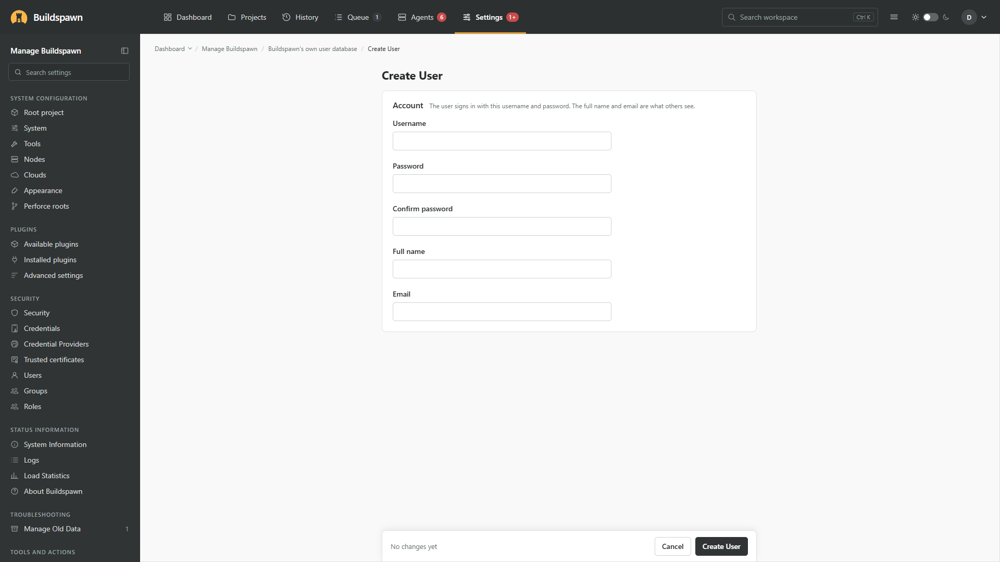
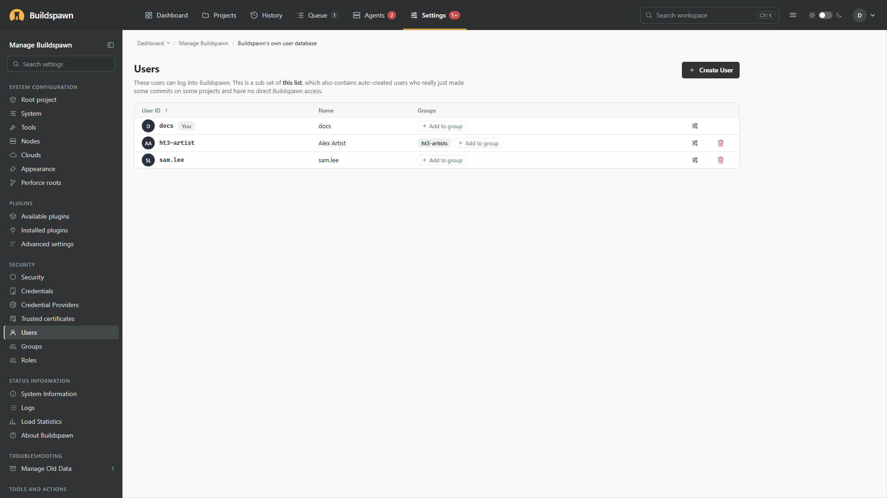
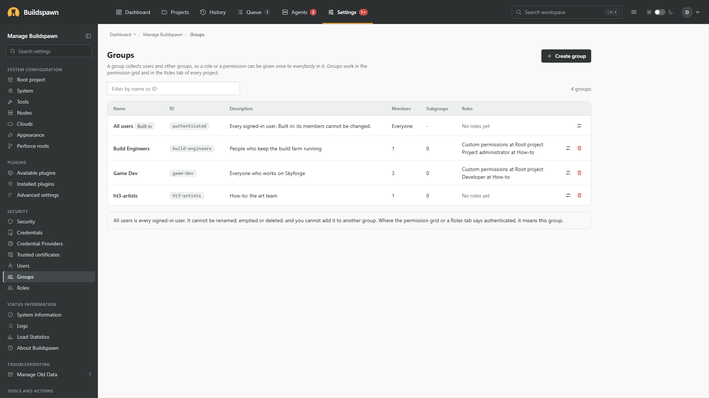

Users and groups
Create the people who can sign in, put them in groups, and give a whole group a role or permission at once.
When to use it
Use these pages when people sign in with Buildspawn’s own user database (see Security realms). With Entra ID or SAML, people and groups come from your company, so you do not create users here. The page Users then shows only people who signed in before, and the groups that Buildspawn keeps are not used for them.
You need Administer to create, change or delete users and groups.
How to set it up
Create a user
- Open Settings › Users and click Create User.
- Fill in the form (see the table below).
- Click Create User.
- Back in the list, click Add to group on the new row and tick the groups. Every user is already in All users.

| Field | What it does | Default | Example |
|---|---|---|---|
| Username | What the person types to sign in. It is the user ID. Use letters, digits, dashes and underscores. It cannot be changed later. | Empty | ht3-artist |
| Password | The first password. It must pass the password rule on Settings › Security. | Empty | (a long password) |
| Confirm password | The same password again. | Empty | — |
| Full name | The name other people see. | Empty | Alex Artist |
| Where build e-mails for the person are sent. | Empty | alex@studio.example |
A new user can sign in at once, but sees nothing until you give them permissions or a role.
The Users list
Settings › Users lists the people who can sign in, with columns User ID, Name and Groups. Your own row is marked You. The text above the list links to the longer list of every user Buildspawn has seen, including people who only made a commit.

| Button | What it does |
|---|---|
| Configure | Opens the settings of that user: name, e-mail, password and the other user settings. |
| Delete | Asks Delete Buildspawn user ‘…’? and removes the account. You cannot delete yourself. |
| Add to group | Opens the list of groups to tick. They are in All users already. |
Change a password
- Open Settings › Users and click Configure on the user. People can also open their own page from the account menu and choose Security.
- Type the new password in Password and again in Confirm Password. Leave both boxes as they are to keep the old password.
- Click Save.
End all sessions of a user
On the Security page of a user, Session Termination has the button Terminate All Sessions. It signs the user out of every browser and device, and disconnects computers that use their sessions. They must sign in again. Use it when a laptop is lost. It does not remove API tokens. See User settings.
Groups
A group collects users and other groups. You give a role or permission to the group, and everyone in it has it. When someone joins the team you add them to the group and they get the right access straight away. Groups work in the permission cards and on the Roles tab of every project. Groups are kept only by Buildspawn’s own user database.
The group All users (ID authenticated) is built in. It means every signed-in user. You cannot rename, empty, delete or add it to another group. Where a card says Authenticated Users, it means this group.
Create a group
- Open Settings › Groups and click Create group.
- Type a Name, for example
Artists. The ID is made from it. - Optional: choose a Parent group.
- Click Create group.

| Field | What it does | Default | Example |
|---|---|---|---|
| Name | Shown in lists and pickers. You can change it at any time. | Empty | Artists |
| ID | What roles and permissions point to. Letters, digits, dots, dashes and underscores. It cannot change later. | Made from the name | artists |
| Description | A line about the group. | Empty | The art team |
| Parent group | Optional. Members of this group then also belong to the parent. | No parent group | Studio staff |
The Groups list
The columns are Name, ID, Description, Members, Subgroups, Roles and Actions. Use Filter by name or ID to find one.
The page of one group
Click a group to open its page. A list of sections on the side shows:
| Section | What it does |
|---|---|
| Members | Users who belong directly. Add a user finds them by ID or name. Users who belong through a subgroup show Also members through subgroups. |
| Subgroups | Groups whose members are also members of this one. Add a subgroup. |
| Member of | The parent groups of this group. Add to a parent group. |
| Roles | Where this group holds a role. Open Roles tab goes to that project. It says This group holds no role anywhere yet when it has none. |
| Permission grid | Where the group has custom permissions in a grid. |
| Settings | Name and description, and Delete this group. Deleting removes its role assignments and permission entries. Users are not deleted. |
From the terminal
| Command | What it does |
|---|---|
create-group ID [-name …] [-description …] [-parent …] | Creates a group. |
delete-group ID | Deletes a group, and its grants at Root, on projects and on build configurations. |
add-group-member GROUP USER… | Adds users to a group. |
remove-group-member GROUP USER… | Takes users out of a group. |
list-groups [GROUP] | Lists the groups, or the members of one (those through subgroups are marked with *). |
A worked example
The art team has three people. You create the group ht3-artists and the users ht3-artist, ht3-rigger and ht3-vfx, and add all three to the group. You give the group the Developer role on the project HT3 (see Roles). When a fourth artist joins, you create the user and add it to the group. Nothing else changes.
What you see when it runs
- The user sees their own groups on their page, under Groups.
- The Groups list shows the counts of members, subgroups and roles.
- A deleted user can no longer sign in. Their past builds keep their name.
Problems and fixes
| Problem | What to do |
|---|---|
| The user name is not allowed. | Use letters, digits, dashes and underscores only. Write alex-artist instead of alex.artist. |
| The new password is refused. | It fails the rule on Settings › Security. The message lists what is missing. |
| The group page says You need the Administer permission to do this. | Only administrators change groups. |
| Already a member | The user is already in that group, directly. |
| You cannot delete a user. | You cannot delete yourself. Ask another administrator. |